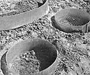
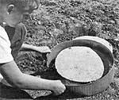

"Quarrying" the homemade flagstones is easy!
With a little leftover cement, a few cents' worth of chicken wire, and some easy-to-make forms (which can later serve to edge flower beds) . . . you can add beauty-and firm, mud-free footing-to your garden.
The homemade flagstones shown in the accompanying photos are ideal by-products of most any large or small concrete project . . . because chances are-whether you pour a foundation, driveway, patio, or retaining wall-you'll have a little material left over. (The drivers of mixing trucks are often delighted to pour such surplus into your wheelbarrow, rather than cart it to some distant dumping site.)
Furthermore, even if you have no such extensive projects planned, you can still stir up a walkway-sized batch of concrete . . . using the ready-mix found at hardware and building supply stores.
For each stepping stone, link together a 50-inch section of interlocking metal garden edging (you can use either galvanized steel or aluminum strips) to form a ring about 15-1/2 inches in diameter. Then, place the form in a flat-bottomed, shallow hole in an unused section of your yard . . . press it gently into the ground ... and push soil against the outer walls to add strength (put a little extra earthen reinforcement where the hoop is fastened together).
Then, to strengthen your stones-to-be, put a square of chicken wire inside the circle and tuck the corners under to hold the "grillwork" about an inch off the ground.
Now you're ready to pour the cement, but bear in mind that a hardened block thicker than two or three inches will be exceedingly heavy to work with . . . while a thinner stone will be likely to crack. It's best to either sink the forms into the earth until they're at the correct height and screed the concrete off the top with a board, or pour your mix to your chosen level and smooth it-inside the frame-with a small trowel. You can, as you choose, leave the flagstones plain ... broom them . . . or press a mosaic of pretty pebbles into the surface and, later, wire brush the decorations until they shine.
When the concrete is completely dry, remove the forms and use them to keep intruding grass away from vegetable or flower beds.
Finally, arrange your attractive, practical stepping stones to make a garden path that would do any landscaper proud!
|
Interlocking garden edging is formed into a ring, placed in a shallow flat-bottomed hole and braced with a banking of soil. A square of chicken wire?set inside the mold?will strengthen the final stone. |
 The rim is removed after the cement dries, and the attractive stepping stones await your landscaping artistry! |
 |